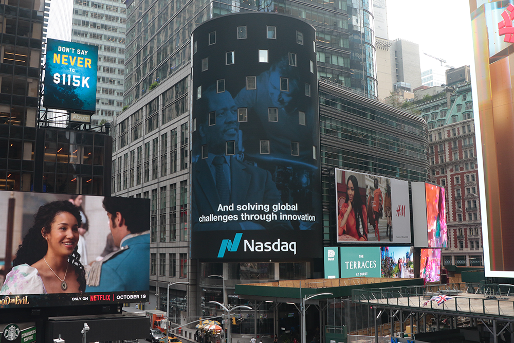

Wits celebrates its centenary in Times Square, New York
- Wits University
Witsies gathered in Times Square this week to celebrate the University’s 100th anniversary.
‘Wits. For Good’ was the theme of the gathering that attracted some impactful and prominent alumni who made their way to Times Square to celebrate with the Wits delegation led by Professor Zeblon Vilakazi, Vice-Chancellor and Principal of Wits University.
An alumnus also honoured Wits with an advertising spot on the façade of the Nasdaq building, on which the ‘Wits. For Good’ message was displayed.
“Wits University has over 200 000 talented alumni scattered across the globe who have played a key role in supporting Wits,” says Vilakazi. “These are innovators, change-makers, and catalysts who impact society, for good. They include Nobel Prize winners such as Nelson Mandela, CEOs, leaders in foundations and trusts, and individuals. We look forward to partnering with many more alumni, donors and entities in the USA, in years to come.”
The Times Square moment forms part of the University’s centenary celebrations, which include alumni reunions in several major cities in the USA, and meetings with key donors and friends of Wits, including the Wits Fund Inc., chaired by Stanley Bergman, who is the CEO of Henry Schein Inc.
Wits alumni and staff who happened to be in New York at the time made it to Times Square and congratulated the University on its centenary and shared their views.
Robbie Brozin, the CEO of Nando’s, who is also spearheading an important Wits-Bara project, says: “This is a beautiful, iconic moment for Wits in Times Square. Wits is going into a new dimension now and I am so excited to be part of it. This is the start of a new partnership and I look forward to working with Wits on the Bara Digitisation Project [a project to systematically digitise records at the Chris Hani Baragwanath Academic Hospital]. This will bring new hope for South Africa. I am so excited and privileged to be a South African and a proud Witsie.”
Mpumi Zikalala, the CEO of Kumba Iron Ore, part of the Anglo American Group, adds: “I am a proud Witsie and it is so amazing being here in Times Square celebrating Wits. Wits has made such a significant difference to many people’s lives, including producing many leaders like that of Duncan Wanblad, the Global CEO of Anglo American. We are looking forward to continuing with the celebrations and to shaping the future of people both in South Africa, and around the world. Witsie for life!”
Professor Helen Rees, Executive Director of the Wits Reproductive Health and HIV Institute (Wits RHI), also a Wits alumna and researcher in the Faculty of Health Sciences at Wits, says that the University has a very strong reputation in health sciences research across the globe, and particularly with regards to the role it played during the Covid-19 pandemic, looking at vaccines, therapeutics and epidemiology.

“It has been an extraordinary set of visits but the most important aspect that we have all realised is about African leadership. There is a true call in our region saying that we have got the scientists and centres of excellence across our region. Let’s reach out and strengthen African leadership,” says Rees. “Wits is in a premier position because we are already a leader in the field. We need to build on that with the celebration of 100 years. So to all the Witsies out there: thank you very much! We can be very proud of Wits as an excellent African institution, an excellent South African institution and what we can offer to our country, to the region and to the world.” ƒ
“I am a proud Witsie!” says Dr Thembisile Xulu, the CEO of the South African National Aids Council. “We are in New York celebrating 100 years of Wits. I am also here for the Global Fund’s Seventh Replenishment. I got my Master’s in Public Health specialising in health policy and health management from Wits. I learnt management and leadership skills at Wits. Congratulations Wits! We are proud of you for the academic excellence and the leaders that we have become.”
Wits alumnus Sherwin Charles adds his voice: “I am so honoured and proud to be a Witsie and to be part of this celebration in Times Square. Wits set the ground for my life, for my success, and it is where I found my lifelong friends. Happy birthday, Wits!”
The celebrations continue as does the Wits100 fundraising campaign. Wits aims to raise R3 billion in funding for research, innovation, infrastructure, teaching and learning, and students as part of the Wits Centenary Campaign, which focuses on eight priority areas. Look out for more information on Wits’ Global Giving Day on 4 October 2022, the University’s official birthday.